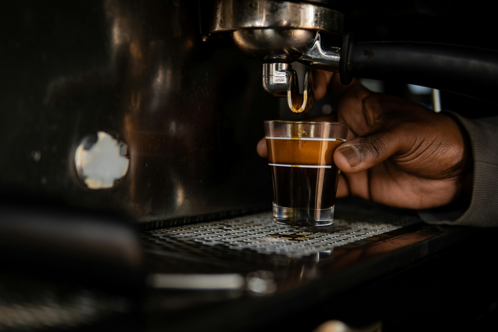
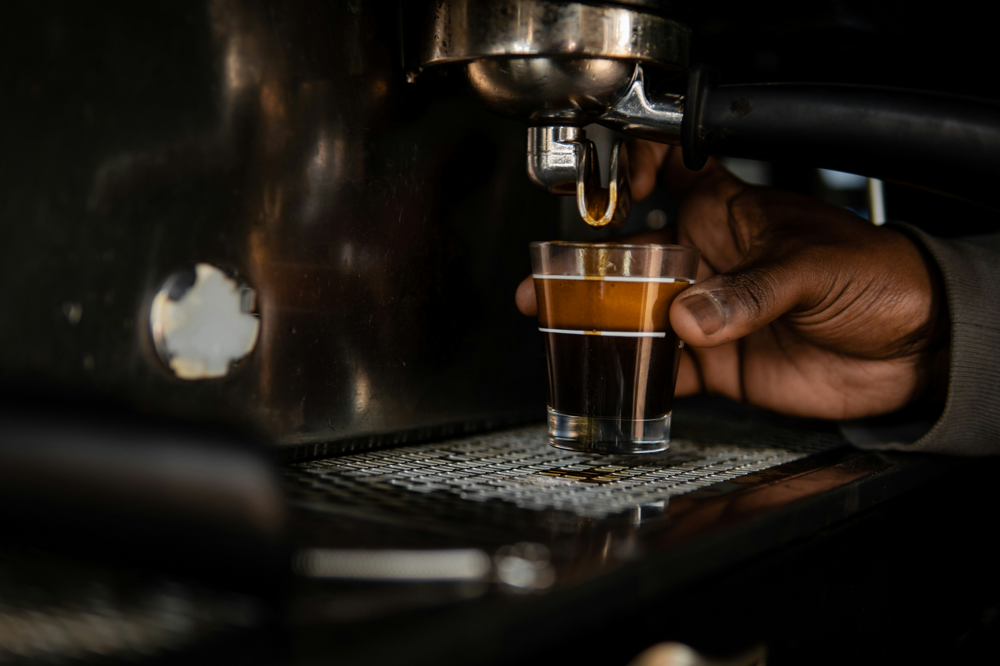

브랜드지원
아눅 페어링 플랜트
Anook의 엄선된 원두와 세심하게 준비된 디저트가 만나, 한 잔의 커피와 함께 특별한 맛의 여정을 선사합니다.

Anook: 커피의 미학,
최고의 품질을 위한 과정
Anook는 커피의 품질을 극대화하기 위해, 과학적이고 혁신적인 기술을 바탕으로 원두 로스팅과 추출 과정을 세심하게 조정합니다. 각 원두의 특성에 맞는 최적의 로스팅 시간과 온도를 계산하여, 커피의 풍미를 최대한 끌어냅니다. 이 과정을 통해, Anook는 매번 일정한 품질의 커피를 제공할 수 있습니다.
커피의 추출 과정 또한 매우 중요합니다. Anook의 바리스타들은 최신 커피 추출 기기와 장비를 사용하여, 원두 본연의 맛을 가장 잘 표현할 수 있도록 합니다. 기계의 정확한 세팅과 바리스타의 기술적 경험이 결합되어, 매번 일관된 품질의 커피가 만들어집니다.
Anook의 커피는 그 자체로 과학적인 조화의 결과입니다. 커피 추출 기법과 원두의 특성을 철저히 분석하여, 고객이 마시는 커피가 항상 최상의 맛을 유지하도록 관리합니다.고객은 언제든지 풍부하고 깊은 맛의 커피를 경험할 수 있습니다.
우리는 커피의 품질을 일정하게 유지하기 위해 지속적으로 연구하고 개선해 나갑니다. 다양한 실험과 데이터를 기반으로, Anook는 커피의 향미와 풍미를 더욱 진화시켜 나가고 있으며, 고객에게 매번 새로운 커피 경험을 선사합니다.
Anook는 커피의 품질을 유지하기 위한 기술적 혁신뿐만 아니라, 고객이 즐기는 커피의 경험을 향상시키기 위해 언제나 최선을 다하고 있습니다. 우리는 고객이 매일 마시는 커피에서 작은 행복과 여유를 찾을 수 있도록, 커피의 시작부터 끝까지 최적의 기술을 적용해 나가고 있습니다.
 

커피와 디저트의 완벽한 조화
특별한 페어링을 즐기세요
Anook은 각 커피의 특성에 맞는 디저트를 신중하게 고르고, 최고의 페어링을 제공합니다.
우리의 디저트는 커피와의 조화를 고려해 매일 매일 신선하게 준비됩니다. 고유한 맛의 균형을 이룬 커피와 디저트의 페어링은 여러분의 미각을 새로운 차원으로 이끌 것입니다. 각 음료에 맞춰 특별히 추천된 디저트를 통해, Anook에서의 시간이 더 풍성하고 만족스러운 경험이 될 것입니다.